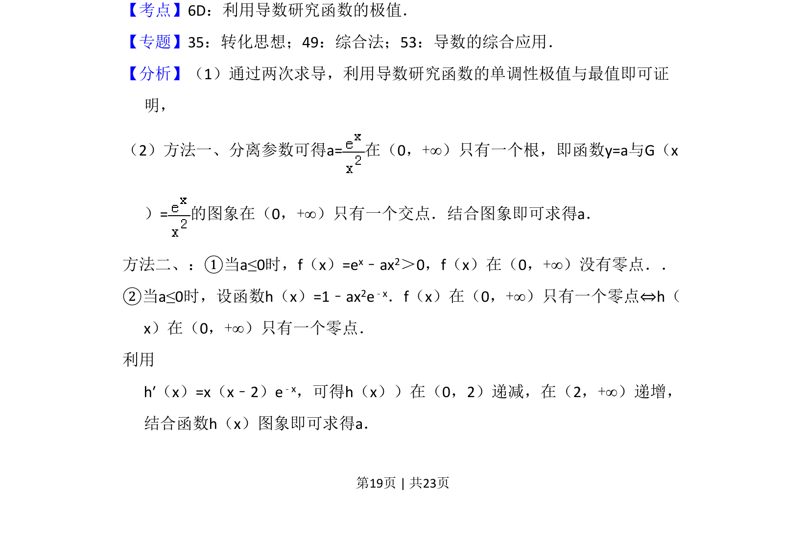
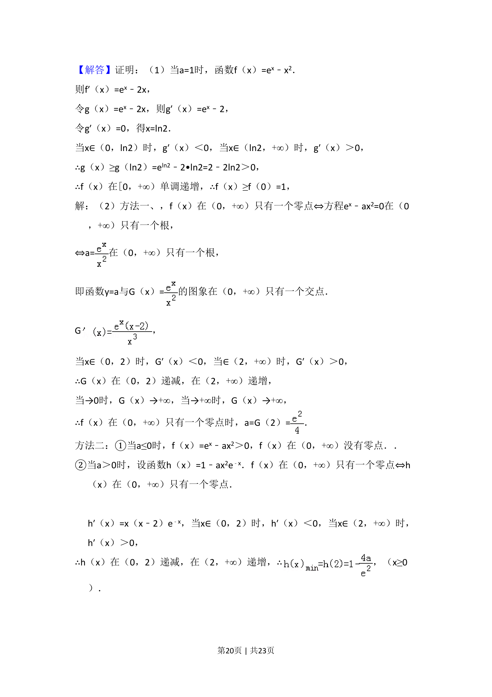
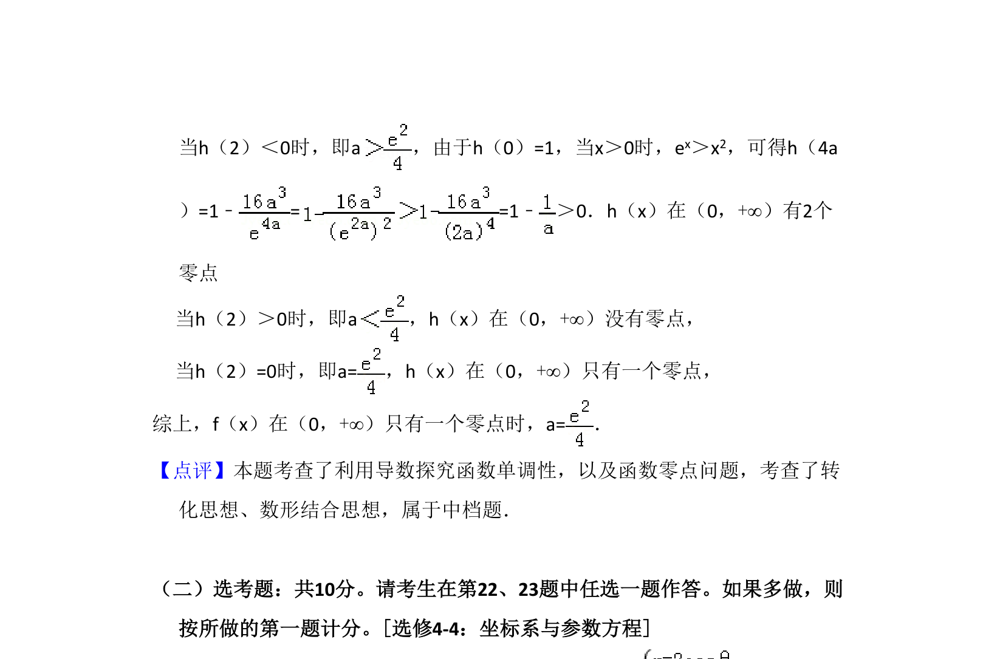

考点：利用导数研究函数的单调性 极值 函数零点 分离参数
通过导数研究含参指数函数的单调性与极值，证明不等式并解决零点个数问题。



📄 原 PDF 第 19 页：
素材/真题/吉林/2008-2024·（吉林）数学高考真题/2018年高考数学试卷（理）（新课标Ⅱ）（解析卷）.pdf
21．（12分）已知函数f（x）=ex﹣ax2． （1）若a=1，证明：当x≥0时，f（x）≥1； （2）若f（x）在（0，+∞）只有一个零点，求a．
【考点】6D：利用导数研究函数的极值．菁优网版权所有 【专题】35：转化思想；49：综合法；53：导数的综合应用． 【分析】（1）通过两次求导，利用导数研究函数的单调性极值与最值即可证 明， （2）方法一、分离参数可得a=在（0，+∞）只有一个根，即函数y=a与G（x ）=的图象在（0，+∞）只有一个交点．结合图象即可求得a． 方法二、：①当a≤0时，f（x）=ex﹣ax2＞0，f（x）在（0，+∞）没有零点．． ②当a≤0时，设函数h（x）=1﹣ax2e﹣x．f（x）在（0，+∞）只有一个零点⇔h（ x）在（0，+∞）只有一个零点． 利用 h′（x）=x（x﹣2）e﹣x，可得h（x））在（0，2）递减，在（2，+∞）递增， 结合函数h（x）图象即可求得a．